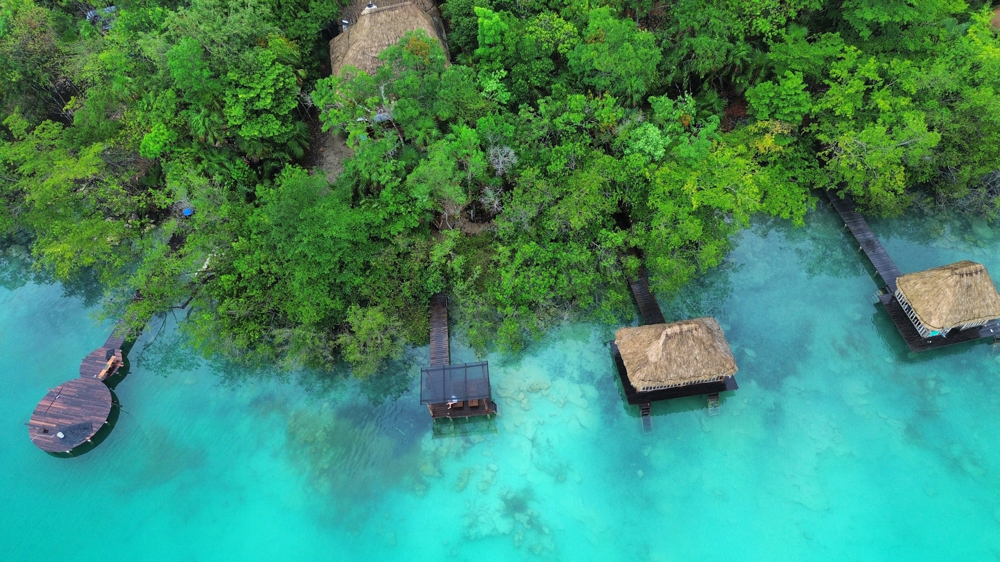
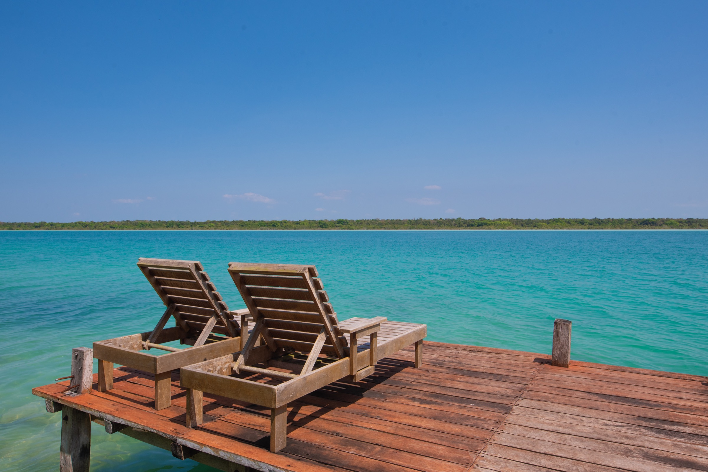
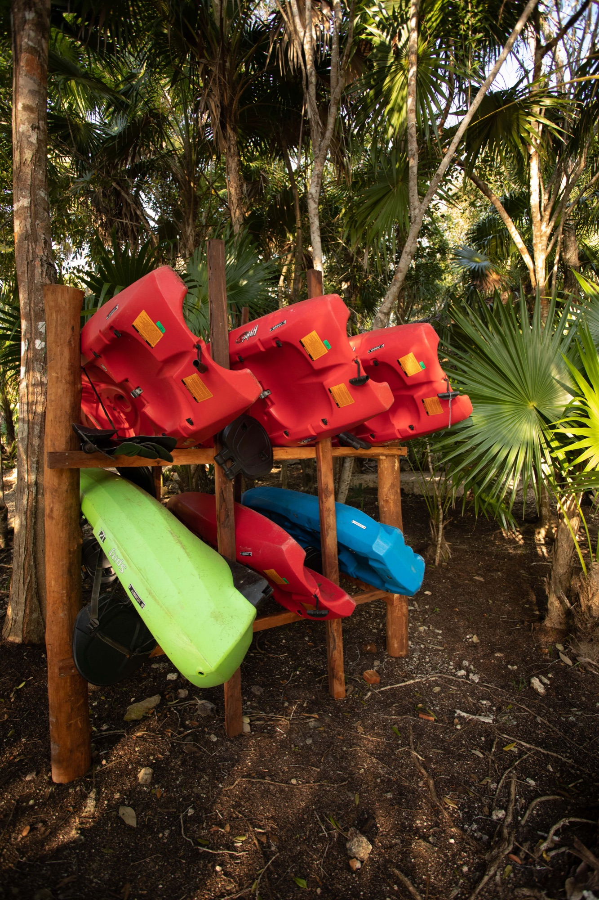

03
Bacalar
History by the lagoon
Explore the town that grew around the 18th-century Fort of San Felipe, then move between the main plaza, cafés, restaurants and the waterfront before returning to the quieter side of the lagoon.

The Experience
Begin on the water at Ichkiichpan, then decide whether the day stays slow or takes you farther into southern Quintana Roo.
FROM ICHKIICHPAN
The experience begins with direct access to Bacalar Lagoon and the kayaks at the property. Beyond the retreat, Bacalar town, the Maya city of Chacchoben and the Caribbean coast at Mahahual each offer a completely different kind of day.

Bacalar Lagoon
Bacalar is a freshwater lagoon known for its changing blue tones. From Ichkiichpan, the water is not an excursion—it is part of the stay: swim, sit on the dock or move out across the lagoon at your own pace.
Kayaks
Kayaks are available for guest use, making one of Bacalar’s signature ways of exploring the lagoon part of the property itself. Go out when the conditions feel right, return when you want, and keep the day entirely your own.

Beyond the lagoon
Leave the retreat when you want more history, town life or the Caribbean coast. These are the three experiences worth building around.
Bacalar
Explore the town that grew around the 18th-century Fort of San Felipe, then move between the main plaza, cafés, restaurants and the waterfront before returning to the quieter side of the lagoon.

Chacchoben
Chacchoben is the most important known Maya settlement in Quintana Roo’s Lake Region. Occupation began around 300 BC, with the urban core taking shape around AD 250 among forest and freshwater landscapes.

Mahahual
Mahahual brings a different horizon: a laid-back Caribbean fishing village, a walkable malecón and warm coastal water known for reefs, snorkeling and diving.
Your Bacalar stay
Private retreat · Up to 14 guests · Direct lagoon access
Respect the lagoon
Bacalar is also an unusually delicate ecosystem, including living stromatolites. The experience should encourage guests to enjoy the water responsibly: never touch or stand on stromatolites and follow local conservation guidance while on the lagoon.